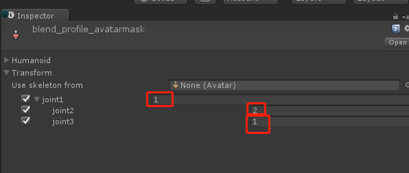
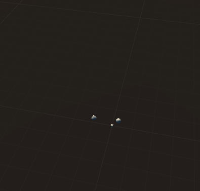
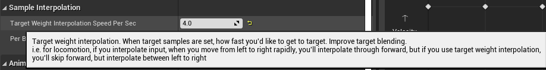
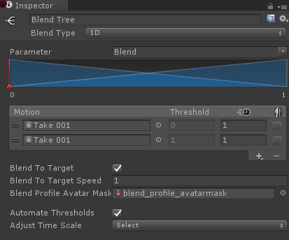
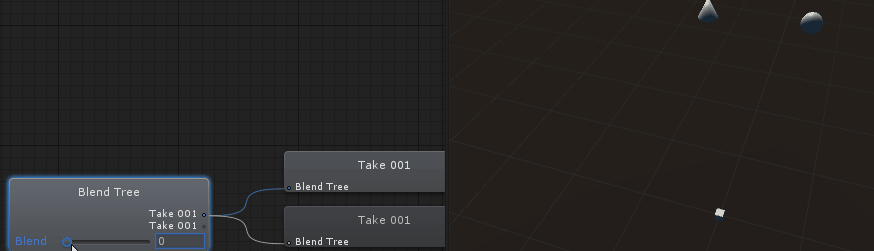

What is Animation Blend Profile?
Animation Blend Profile is a UE4 animation system feature that enables us to set blend speed of each bone separately.
This is majorly used with movement transitions which needs to avoid foot sliding and to have a fluent upper body transition.
Transitions like Idle<->Moving or Floating->Landing need this feature desperately. Because players don’t like foot sliding around, but the upper body would look bad if we set the transition time to a small value.
Thus we need to make upper body to blend slower, and lower body to blend faster.
How to use animation blend profile in Unity?
Firstly, there shall be a place for us to set blend speed of each bone. Thus, an AvatarMask is a wonderful option. I’ve add a blend profile speed for each bone in Unity’s AvatarMask:

It needs to be concerned that you are guaranteed to have bone blend speed non-less than 1, otherwise there would be some problem with transition time.
And then we can set this blend profile AvatarMask for each state transtition like this:

So it is easy to know that joint2 would be blended faster than joint3:

Use Animation Blend Profile in BlendTree
Since I’ve implement a Blend to Target feature which allows interpolation of weight rather than blend tree parameters. This is pretty much the same as Target weight interpolation Speed Per Sec:

Thus it makes it possible for us to add an Blend Profile for a Blend Tree that enables Blend To Target:

This allows us to set blend speed for each bone inside a Blend Tree:
